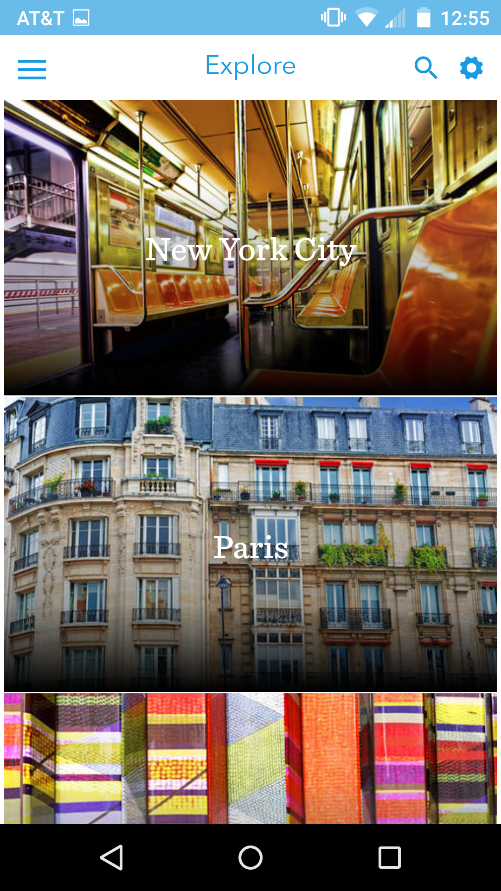

wilsojb
Josh Wilson is an engineering manager based out of Little Rock, Arkansas.
In 2018, Josh joined DataMonster to help build their data ingestion capabilities and capacity. Come work with us! My team needs data engineers and analysts!
From 2016 to 2018, Josh worked at Enigma where he built data-intensive applications for fortune 50 enterprises. His role gradually shifted to building a team that integrated Enigma's data products across extremely diverse IT landscapes.
In 2014 he founded DoubleDoss Labs, which focuses on product development, technology solutions, and operations for early stage startups and small businesses.
From 2011 to 2015, Josh worked for Hudson River Trading where he helped build and operate a global trading system. Responsiblities ranged widely from internal tooling to DevOps to data visualizations. He even actively traded securities as a registered representative on the open markets.
Josh holds a M.S. in Physics from the University of North Carolina in Chapel Hill, NC. There he researched computational and analytical solutions to nonlinear PDEs and, more generally, scientific computing. Josh also holds a B.A. in Physics and Computer Science from Hendrix College in Conway, AR.
Josh grew up in a house full of tools, ever-changing hobbies, and DIY attitudes that shaped how he approaches his work today.
DataMonster
Engineering ManagerSenior Data Engineer
New York, NY & Little Rock, AR
2018 - present
Enigma Technologies
Engineering ManagerData Engineer
New York, NY
2016 - 2018
General Assembly
Data Science GraduateNew York, NY
2016
TripExpert
Software Engineer (Mobile)New York, NY
2015
DoubleDoss Labs
FounderNew York, NY
2014 - present
Hudson River Trading
TradeOps DeveloperNew York, NY
2011 - 2015
University of North Carolina
Graduate Research AssistantChapel Hill, NC
2008 - 2010
Hendrix College
Orientation CoordinatorUndergraduate Research Assistant
Conway, AR
2005 - 2008
Nicholas Barnes, MD
Nick runs a private practice and needed a way to get the word out. He was looking for a clean, simple design that would load quickly on any device or browser. So I built him a site using Hugo (my new favorite static site generator!) and S3.
S&J Wedding Website #2
This time around the "S&J" are my wife and I! This site's purpose was mostly to highlight my wife's amazing artwork and share some basic details about our big day. I was able to repurpose most of the code from #1. Why pay for a cookiecutter website builder when you can do it yourself for free?
Unsupervised pocket article clustering that integrates with diffbot for most of the data collection. The final project of an eleven week data science course I took at general assembly. All of the code can be found on github.
S&J Wedding Website #1
S&J had some unique ideas in mind for their wedding website that generic wedding website builders could not do for them. I used a mean stack and integrated Auth0 on top of it to provide a custom login for each of their guests.
A hybrid mobile app built using the best hybrid mobile tech available in early 2015 (e.g. angular 1.x, ionic 1.0, flask, pouchdb). I'm doubtful if those would be the best choice today - mobile moves fast. Complemented www.tripexpert.com. For iOS and Android.

snapsite.io
Simple static website deployment from the command line. An experiment that used Flask, Google App Engine, and Google Datastore. Mostly useless, except for sharing the ocassional reveal.js presentation.
Pdelab
An object oriented framework for solving and analyzing PDE that grew organically out of my graduate thesis. The goal of the framework was to abstract away the mechanics so the researcher could spend more time focusing on solutions. The code can be found on github.